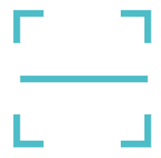

请使用分规心电APP二维码
服务电话：028-85156788/15308091011 规格型号：FGH 版本号：V1.0.0.1 发布版本：1
心得安®、分规®、圆规®、园规®、优部®、 ®均为我公司注册商标。
®均为我公司注册商标。 

欢迎您使用分规®心电数据处理软件（下称“分规®心电”），并阅读成都琅瑞医疗技术股份有限公司（下称“琅瑞医疗”）与其用户的《分规®心电数据处理软件用户使用协议及隐私政策》（下称“本使用协议”）之条款，本使用协议阐述之条款适用于您使用琅瑞医疗提供的工具、服务、产品、技术或软件，包括分规®心电数据处理软件（下称“分规®心电”）。 您应阅读本使用协议中各条款，包括免除或者限制成都琅瑞医疗技术股份有限公司责任的免责条款及对用户的权利限制，审阅并接受本使用协议。
除非您接受本使用协议条款，否则您无权下载、安装或使用分规®心电数据处理软件及其相关服务。您的下载、安装及/或使用行为将视为对本使用协议的接受，并同意接受本使用协议各项条款的约束。本使用协议是用户与成都琅瑞医疗技术股份有限公司及其运营合作单位 (下称“合作单位”)（如有）之间关于用户下载、安装及/或使用分规®心电数据处理软件所订立的协议。本使用协议描述成都琅瑞医疗技术股份有限公司与您之间关于分规®心电数据处理软件使用及相关方面的权利义务。“用户”或“您”是指通过成都琅瑞医疗技术股份有限公司提供的获取软件授权的途径而获得下载、安装及/或使用分规®心电数据处理软件的医疗单位。 请注意，分规®心电数据处理软件仅供能够根据相关法律订立具有法律约束力的合约的医疗机构使用，因此，您的年龄必须在十八周岁以上，才可下载、安装及/或使用分规®心电数据处理软件，如不符合条件，请勿下载、安装及/或使用分规®心电数据处理软件。 本协议内容如下：
1.1 您认可并同意成都琅瑞医疗技术股份有限公司（或成都琅瑞医疗技术股份有限公司的许可证授权人）拥有所有包含在分规®心电数据处理软件及相关服务的法定权利、所有权和权益，包括存在于分规®心电数据处理软件的所有知识产权（无论这些权利是否已经注册，亦无论存在于世界上任何国家或地区）。
1.2 分规®心电数据处理软件的一切版权等知识产权，以及与分规®心电数据处理软件相关的所有信息内容，包括但不限于：文字表述及其组合、图标、图饰、图表、色彩、界面设计、版面框架、有关数据、印刷材料、电子文档等均受著作权法和国际著作权条约以及其他知识产权法律法规的保护。
2.1 用户可以在单一一台或多台服务器、计算机、终端机、工作站（下统称“计算机”）上安装、使用、显示、运行本分规®心电数据处理软件。
2.2 保留权利：未明示授权的其他一切权利（包括任何成都琅瑞医疗技术股份有限公司的商业名称、商标、服务标记、徽标、域名及其他明显标志的权利）仍归成都琅瑞医疗技术股份有限公司所有。除非取得成都琅瑞医疗技术股份有限公司的书面同意，本使用协议并未授权用户可使用其他权利。
2.3 分规®心电数据处理软件只允许接受本使用协议的用户使用。用户不可修改、复制（本使用协议2.4节订明除外）或改编分规®心电数据处理软件及其软件，也不可利用分规®心电数据处理软件及/或其软件的知识产权开发其他产品。
2.4 如果您在除下载、安装分规®心电数据处理软件到您的计算机外，希望复制分规®心电数据处理软件到您的另一个硬盘以作参考备份之用，您需要同意下述条件：
1）有关使用复制分规®心电数据处理软件的资料并非作任何商业用途；
2）有关使用复制分规®心电数据处理软件的资料必须遵从本使用协议之条款；
3）作为用户，您不应复制分规®心电数据处理软件给任何第三者（包括公司及个人）。
3.1.1 删除分规®心电数据处理软件及其他副本上所有关于版权的信息、内容；
3.1.2 对分规®心电数据处理软件进行反向工程、反向汇编、反向编译等;
3.1.3 对于分规®心电数据处理软件”相关信息等，未经成都琅瑞医疗技术股份有限公司书面同意，用户擅自实施包括但不限于下列行为：使用、复制、修改、链接、转载、汇编、发表、出版，建立镜像站点、擅自借助分规®心电数据处理软件发展与之有关的衍生产品、作品、服务等。
3.1.5 利用分规®心电数据处理软件发表、传送、传播、储存侵害他人知识产权、商业秘密权等合法权利的内容。
3.1.6 进行任何危害计算机网络安全的行为，包括但不限于：使用未经许可的数据或进入未经许可的服务器/帐户；未经允许进入公众计算机网络或者他人计算机系统并删除、修改、增加存储信息；未经许可，企图探查、扫描、测试分规®心电数据处理软件系统或网络的弱点或其它实施破坏网络安全的行为； 企图干涉、破坏分规®心电数据处理软件系统或网站的正常运行，故意传播恶意程序或病毒以及其他破坏干扰正常网络信息服务的行为；伪造TCP/IP数据包名称或部分名称。
3.2 使用分规®心电数据处理软件必须遵守国家有关法律和政策等，维护国家利益，保护国家安全，并遵守本使用协议。对于用户违法或违反本使用协议的使用而引起的一切责任，由用户负全部责任，一概与成都琅瑞医疗技术股份有限公司无关。导致成都琅瑞医疗技术股份有限公司损失的，成都琅瑞医疗技术股份有限公司有权要求用户赔偿，并有权立即停止向其提供服务，保留相关记录，保留配合司法机关追究法律责任的权利。
3.3 分规®心电数据处理软件同大多数医疗信息软件一样，可能受到各种新增安全问题的侵扰，用户应加强信息安全及使用者资料的保护意识，要注意加强保护，以免遭致损失和骚扰。用户在使用分规®心电数据处理软件前应对此种情况有充分的认识，并自行承担由此而可能引起的风险和损失。
3.4 非经成都琅瑞医疗技术股份有限公司或成都琅瑞医疗技术股份有限公司授权开发并正式发布的其它任何由分规®心电数据处理软件衍生的软件均属非法，下载、安装、使用此类软件，将可能导致不可预知的风险。建议用户不要轻易下载、安装、使用，否则由此产生的一切法律责任与纠纷一概与成都琅瑞医疗技术股份有限公司无关。
3.5 分规®心电数据处理软件由多种应用程序组成，并将通过网络进行多种通信和信息服务作为其常规操作的一部分。许多通信和信息服务功能是自动的，并可通过默认方式启用。安装和（或）使用分规®心电数据处理软件表示您接受分规®心电数据处理软件的通信和信息服务功能。
3.6 一般而言，成都琅瑞医疗技术股份有限公司基于下列原因需要使用到用户的资料信息：（1）执行软件验证服务；（2）执行软件升级服务；（3）提高您的使用安全性并提供客户支持；（4）执行成都琅瑞医疗技术股份有限公司的隐私保护声明。
3.7 “用户同意”的方式有：（1）接受本使用协议及成都琅瑞医疗技术股份有限公司发布的服务条款；（2）用户通过电子邮件、电话、传真、即时通信等方式所作的口头或书面表示；（3）协议或服务声明中有“默认同意”条款，用户对此无异议的；
3.8 分规®心电数据处理软件的替换、修改和升级：成都琅瑞医疗技术股份有限公司保留在任何时候为您提供分规®心电数据处理软件替换、修改、升级版本的权利以及开通用户默认分规®心电数据处理软件之“升级提示”功能。如有必要，修改或升级会以通告形式公布于成都琅瑞医疗技术股份有限公司客户服务和技术支持网站重要页面上。
3.9 在成都琅瑞医疗技术股份有限公司承诺的免费使用期限内，用户可以免费使用分规®心电数据处理软件。免费使用期满后，成都琅瑞医疗技术股份有限公司保留向用户为替换、修改或升级收取使用费用的权利，如用户拒付或拖欠费用，成都琅瑞医疗技术股份有限公司有权取消用户使用分规®心电数据处理软件的权利并停止服务。
3.10 成都琅瑞医疗技术股份有限公司和/或合作单位将根据市场与技术的发展向用户提供与分规®心电数据处理软件相关的各种互联网以及功能增值服务，包括免费和收费的增值服务。成都琅瑞医疗技术股份有限公司和/或合作单位保留对相关增值服务收取费用及改变收费标准、方式的权利；如相关功能及/或技术支援服务由免费变更为收费，成都琅瑞医疗技术股份有限公司和/或合作单位将以适当的形式通知，用户可自主选择接受或拒绝该收费，并保证在使用收费功能及/或技术支援服务时，将按照成都琅瑞医疗技术股份有限公司和/或合作单位相关收费规定支付费用，如拒付或拖欠费用，成都琅瑞医疗技术股份有限公司和/或合作单位有权停止该些增值功能或技术支援服务，并依法追偿损失及赔偿。
4.1 用户违反本使用协议或相关的条款的规定，成都琅瑞医疗技术股份有限公司有权视用户的行为性质，采取包括但不限于中断使用许可、停止提供产品及技术支援、限制使用、法律追究等措施。
4.2 除本使用协议注明之条款外，其它因下载、安装及/或使用成都琅瑞医疗技术股份有限公司及/或本网站提供的资讯、服务、技术、软件、硬件产品包括分规®心电数据处理软件而引致或产生（无论是疏忽或其他原因引起的），成都琅瑞医疗技术股份有限公司概不负责。
4.3 对于每一用户，成都琅瑞医疗技术股份有限公司应承担的因与分规®心电数据处理软件相关所引致的所有损失（包括费用和利息）的任何性质的赔偿责任之总和，无论此种责任是因合同、民事侵权行为（包括但不限于疏忽）导致或因其他因素造成，均不应超于成都琅瑞医疗技术股份有限公司在该用户损失发生年度向该用户所收取的费用。
5.1 分规®心电数据处理软件已经取得《医疗器械注册证》，满足用户作为医疗设备使用的法律规范，用户使用分规®心电数据处理软件采集、处理心电数据时，应保证心电数据来源真实、合法、无所有权和技术纠纷，用户自行决定使用范围并承担使用风险。
5.2成都琅瑞医疗技术股份有限公司及合作单位对分规®心电数据处理软件不作任何类型的担保，不论是明示的、默示的或法令的保证和条件，包括但不限于分规®心电数据处理软件的适销性、适用性、无病毒、无疏忽或无技术瑕疵问题、所有权、和无侵权的明示或默示担保和条件，对在任何情况下因使用或不能使用分规®心电数据处理软件所产生的直接、间接、偶然、特殊及后续的损害及风险，成都琅瑞医疗技术股份有限公司及合作单位不承担任何责任。
5.3使用分规®心电数据处理软件涉及到信息化服务，可能会受到各个环节不稳定因素的影响，存在因不可抗力、计算机病毒、黑客攻击、系统不稳定、用户所在位置、用户关机以及其他任何网络、技术、通信线路等原因造成的服务中断或不能满足用户要求的风险，用户须明白并自行承担以上风险，用户因此不能正常使用分规®心电数据处理软件，成都琅瑞医疗技术股份有限公司及合作单位均不承担任何责任。
5.4用户因第三方如电信部门的通讯线路故障、技术问题、网络、电脑故障、系统不稳定性及其他各种不可抗力原因而遭受的经济损失，成都琅瑞医疗技术股份有限公司及合作单位均不承担责任
5.5 成都琅瑞医疗技术股份有限公司向用户提供的分规®心电数据处理软件均为“依其现状”提供，成都琅瑞医疗技术股份有限公司在此免除任何其他明示的或默示的关于分规®心电数据处理软件的陈述或保证，包括任何营销性、运行、不侵权或适用于特殊目的的默示保证，和产生于交易过程或履约过程的默示保证。成都琅瑞医疗技术股份有限公司不保证分规®心电数据处理软件和任何技术支援/服务达到用户的要求，也不保证其适用性和功能；成都琅瑞医疗技术股份有限公司也不对通过分规®心电数据处理软件的使用获得的任何信息的结果、准确性或可靠性作任何保证。成都琅瑞医疗技术股份有限公司也不会向您作出以下声明和保证：- 您对分规®心电数据处理软件的使用会连续无中断、安全或没有错误；- 作为分规®心电数据处理软件的组成部分向您提供的任何软件的运行或功能缺陷会得到修正。
5.6 分规®心电数据处理软件提供的数据分析均在您自行采集并提供的心电数据基础上进行，您因自行确保采集数据的合法、真实、有效、完整，否则，成都琅瑞医疗技术股份有限公司不对因您采集数据不合法、不真实、不完整导致纠纷或由此产生的法律后果承担任何责任，相应责任由您自行承担。
6.1本协议所定的任何条款的部分或全部无效者，不影响其它条款的有效性。
6.2不可抗力 对于因成都琅瑞医疗技术股份有限公司合理控制范围以外的原因，包括但不限于自然灾害、罢工或骚乱、暴动、战争行为、政府行为、防疫措施、通讯或其他设施故障或严重伤亡事故等，致使成都琅瑞医疗技术股份有限公司延迟或未能履约的，成都琅瑞医疗技术股份有限公司不对您承担任何责任。
6.3 成都琅瑞医疗技术股份有限公司保留变更本使用协议的权利；在变更生效前，我们会提前在客户服务和技术支持网站上作出公示；如果您不同意协议的变更，您可以在变更生效前停止使用分规®心电数据处理软件；如果您不停止使用分规®心电数据处理软件，则您对分规®心电数据处理软件的继续使用应遵守变更后的使用协议。
6.4 本使用协议的解释、效力及纠纷的解决，适用于中华人民共和国法律。若用户和成都琅瑞医疗技术股份有限公司之间发生任何纠纷或争议，首先应友好协商解决，协商不成的，任何一方可向成都市仲裁委员会申请仲裁。有关的仲裁裁决是终局的，对协议双方均有约束力。
6.5有关本使用协议的最终解释权为成都琅瑞医疗技术股份有限公司所有。
若您通过在您自行购买私有服务器并安装使用分规心电数据处理软件的，则相应的数据和信息均存储至您自行购买的私有服务器中，由您自行进行保存和处理。
若您通过登录琅瑞医疗云平台（简称“平台”）使用分规心电数据处理软件，鉴于网络的特性，若您选择将无可避免地与您产生直接或间接的互动关系，分规心电数据处理软件对用户个人或公司信息所采取的收集、使用和保护政策特此说明：
2.1非个人化信息：我们将通过您的IP地址来收集非个人化的信息，例如您的浏览器性质、操作系统种类、给您提供接入服务的ISP的域名等。收集上述信息的目的是为向您提供更优质的服务。
2.2个人资料：当您在平台进行用户注册登记，所提供一些个人或公司资料，包括个人识别资料：如姓名、性别、身份证号码（或护照号码）、电话、通信地址、住址、电子邮件地址等；个人背景： 职业、教育程度、收入状况、婚姻、家庭状况等。在未经您同意及确认之前，平台不会将您为参加平台之特定活动所提供的资料用于其它目的。
2.3 心电数据信息：您知晓并确认，分规心电数据处理软件的分析均基于您上传心电数据信息，分规心电数据处理软件获得该部分数据信息均视为您已经合法授权分规心电数据处理软件使用自身技术和算法对该部分数据进行分析处理。琅瑞医疗对该部分信息数据将严格保密，未经您许可绝不对外披露。您知晓并同意您可通过平台自行删除该部分数据信息，若您点击删除，平台将不会做任何备份保留。
2.4信息安全：平台将对您所提供的资料进行严格的管理及保护，平台将使用相应的技术，防止您的个人资料丢失、被盗用或遭篡改。
2.5平台惟在符合下列条件之一，方对收集之个人资料进行必要范围以外之利用：
a、已取得您的书面同意；
b、为免除您在生命、身体或财产方面之急迫危险；
c、为防止他人权益之重大危害；
d、为增进公共利益，且无害于您的重大利益。
2.6 个人资料之披露：当政府机关依照法定程序要求琅瑞医疗或平台披露您的个人或公司资料时，平台将根据执法单位之要求或为公共安全之目的提供您的个人或公司资料。
成都琅瑞医疗技术股份有限公司
2020年1月2日